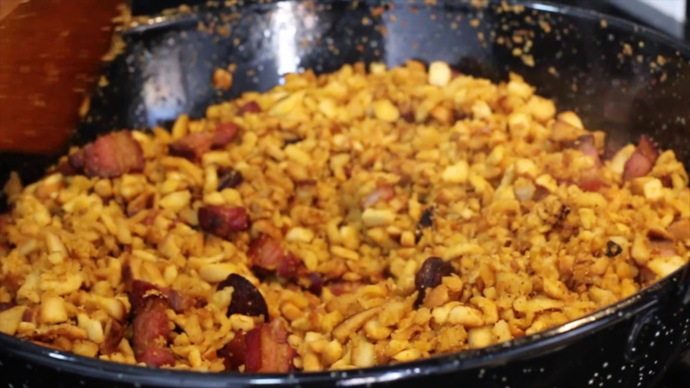
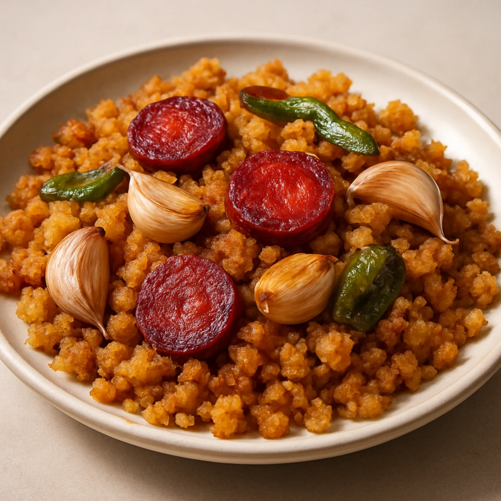
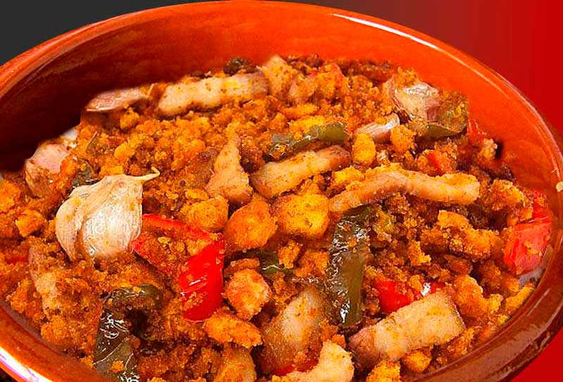

Migas Extremeñas
El plato pastoril por excelencia, sencillo y delicioso.
Un plato emblemático
Las migas extremeñas son uno de los platos más representativos de la gastronomía tradicional de Extremadura, y en Herrera del Duque ocupan un lugar muy especial tanto en la cocina como en la vida social del municipio.
Origen humilde y tradición
Se trata de una receta de origen humilde, nacida del aprovechamiento del pan duro por parte de pastores y trabajadores del campo. Con ingredientes sencillos —pan asentado, ajo, aceite de oliva y pimentón— se elabora un plato sabroso, energético y profundamente ligado a la historia rural de la región. En Herrera del Duque, esta tradición se ha mantenido viva durante generaciones, transmitiéndose de padres a hijos.
Preparación y acompañamiento
Lo que hace únicas a las migas en esta localidad es su forma de preparación y acompañamiento. Es habitual que se cocinen lentamente en grandes sartenes, removiéndolas con paciencia hasta conseguir una textura suelta y dorada. Se suelen servir con productos típicos de la zona como torreznos, chorizo o panceta, y en muchas ocasiones se combinan con uvas, melón o incluso sardinas, creando un contraste de sabores muy característico.
Componente social
Más allá de la receta, las migas tienen un fuerte componente social. En Herrera del Duque son protagonistas en fiestas, reuniones familiares y eventos populares, donde se elaboran en grupo y se comparten entre vecinos y visitantes. Este acto de cocinar y comer juntos refuerza los lazos comunitarios y convierte el plato en una experiencia cultural, no solo gastronómica.
Expresión de identidad
En definitiva, las migas extremeñas en Herrera del Duque no son solo un alimento: son una expresión de identidad, tradición y convivencia que permite al visitante acercarse de forma auténtica a la esencia del lugar.
Galería de fotos


